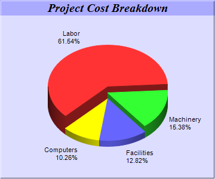

This example demonstrates a 3D pie chart where sectors have different 3D heights.
Instead of using
PieChart.set3D to set a single 3D depth for all sectors, in this example,
PieChart.set3D2 is used to set different depths for the sectors with an array of integers.
The following is the command line version of the code in "cppdemo/multidepthpie". The MFC version of the code is in "mfcdemo/mfcdemo". The Qt Widgets version of the code is in "qtdemo/qtdemo". The QML/Qt Quick version of the code is in "qmldemo/qmldemo".
#include "chartdir.h"
int main(int argc, char *argv[])
{
// The data for the pie chart
double data[] = {72, 18, 15, 12};
const int data_size = (int)(sizeof(data)/sizeof(*data));
// The labels for the pie chart
const char* labels[] = {"Labor", "Machinery", "Facilities", "Computers"};
const int labels_size = (int)(sizeof(labels)/sizeof(*labels));
// The depths for the sectors
double depths[] = {30, 20, 10, 10};
const int depths_size = (int)(sizeof(depths)/sizeof(*depths));
// Create a PieChart object of size 360 x 300 pixels, with a light blue (DDDDFF) background and
// a 1 pixel 3D border
PieChart* c = new PieChart(360, 300, 0xddddff, -1, 1);
// Set the center of the pie at (180, 175) and the radius to 100 pixels
c->setPieSize(180, 175, 100);
// Add a title box using 15pt Times Bold Italic font and blue (AAAAFF) as background color
c->addTitle("Project Cost Breakdown", "Times New Roman Bold Italic", 15)->setBackground(0xaaaaff
);
// Set the pie data and the pie labels
c->setData(DoubleArray(data, data_size), StringArray(labels, labels_size));
// Draw the pie in 3D with variable 3D depths
c->set3D(DoubleArray(depths, depths_size));
// Set the start angle to 225 degrees may improve layout when the depths of the sector are
// sorted in descending order, because it ensures the tallest sector is at the back.
c->setStartAngle(225);
// Output the chart
c->makeChart("multidepthpie.png");
//free up resources
delete c;
return 0;
}
© 2023 Advanced Software Engineering Limited. All rights reserved.